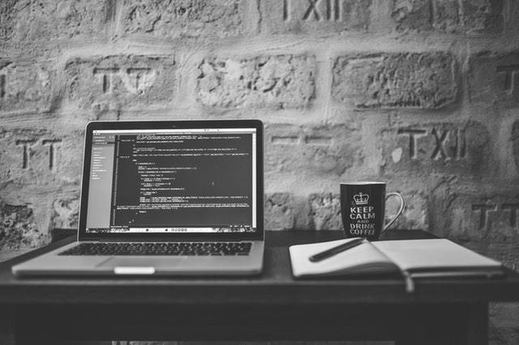

Programming

Programming adalah sebuah proses seseorang menulis, memperbaiki,
menguji, dan memelihara kode-kode dalam membuat sebuah program komputer.
Kode-kode tersebut ditulis dalam bahasa pemrograman yang tidak hanya ada satu macam saja.
Anda bisa membuat sebuah program dengan bahasa pemrograman yang mungkin berbeda dengan bahasa
milik teman Anda. Tergantung bahasa pemrograman apa yang Anda kuasai dalam melakukan program
sistem. Dengan Anda memahami dan mampu mengaplikasikan langsung bahasa ke dalam program.